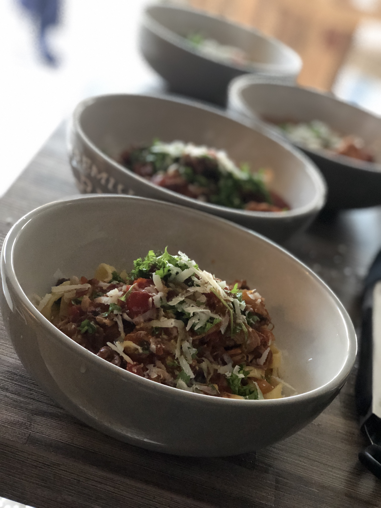
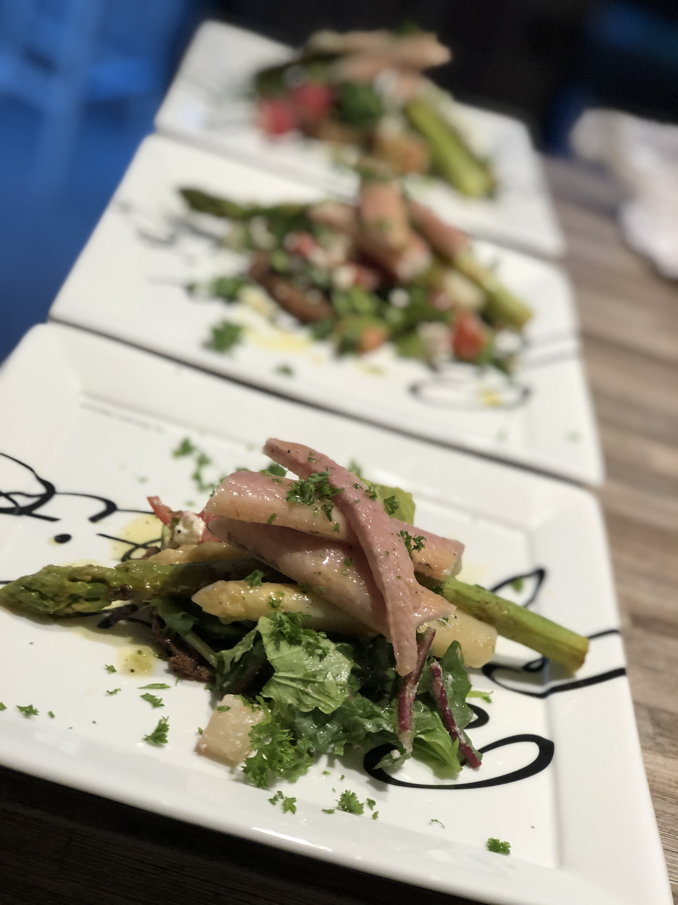
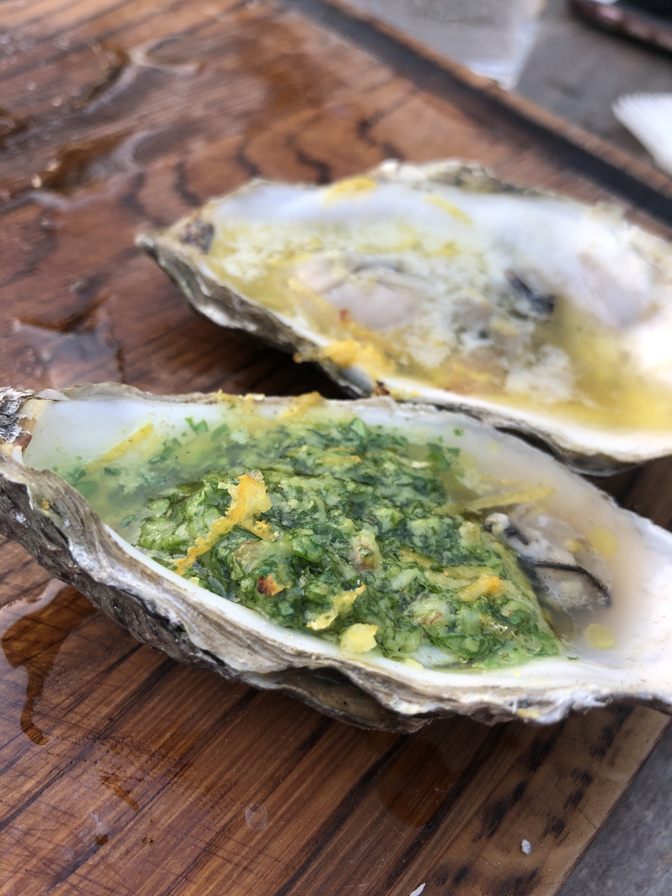

I love to cook for friends and drink a lot of wine. What else to say?
I dare you!|  |
Ragù alla BologneseWhat a bloody damn good choice when you need to recharge after your last hangover! Slowly cooked for 6h, topped with aged Parmegiano Reggiano, freshly chopped parsley and loads of olive oil Extra Vergine.. |
|  |
Smoked eel with green asparagus and grenn peasHome smoked eel with green peas from the garden. Don't forget to squeeze the lemon on top of it. |
|  |
Grilled oyster with butter and lemon peelIf you haven't tried grilled oysters yet, you'd better do that at your next bbq. |
My English is as shitty as my coding skills, but I'm wondering if I succeed one day...
Test 123